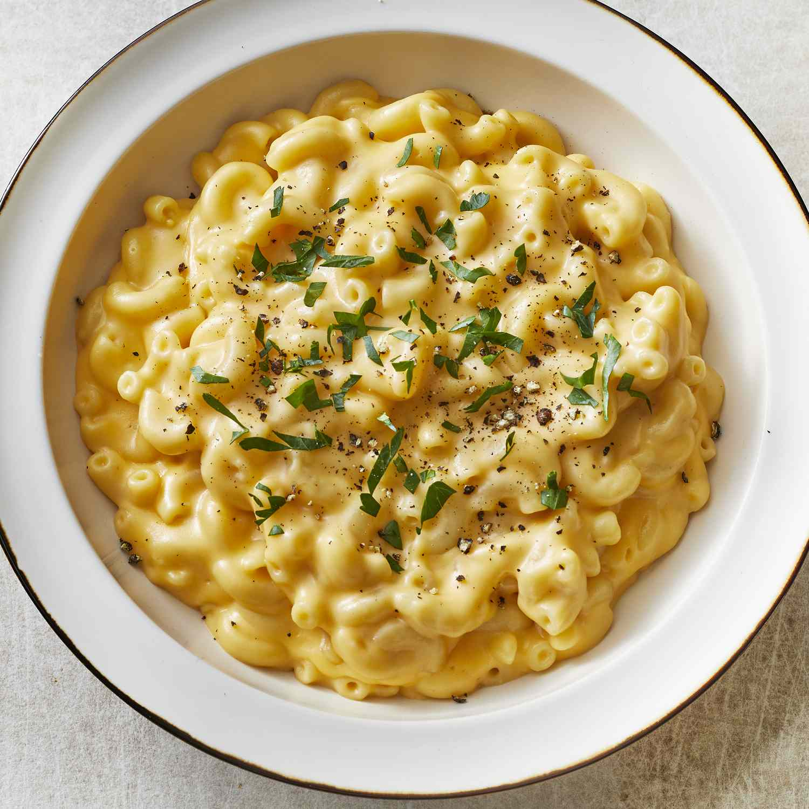

Macrroni

Description:
This mac and cheese recipe uses staple ingredients and comes together in just 25 minutes.
You’ll want to bookmark this recipe for busy weeknights.
The good news is, it’s so simple that once you make it a couple times,
you’ll likely have it memorized.
Ingredients:
- 1 (8 ounce) box elbow macaroni
- ¼ cup butter
- ¼ cup all-purpose flour
- ½ teaspoon salt
- ground black pepper to taste
- 2 cups milk
- 2 cups shredded cheddar cheese
Instructions:
- Gather the ingredients.
- Bring a large pot of lightly salted water to a boil.
Cook elbow macaroni in the boiling water,
stirring occasionally until tender yet firm to the bite,
about 8 minutes.
- Meanwhile, melt butter in a saucepan over medium heat.
- Whisk in flour, salt, and black pepper until smooth, about 5 minutes.
- Slowly pour in milk, while constantly stirring;
cook and stir until mixture is smooth and bubbling, about 5 minutes,
making sure the milk doesn’t burn.
- Add Cheddar cheese and stir until melted, 2 to 4 minutes.
- Drain macaroni and fold into cheese sauce until coated.
- Serve hot and enjoy!
Back to index